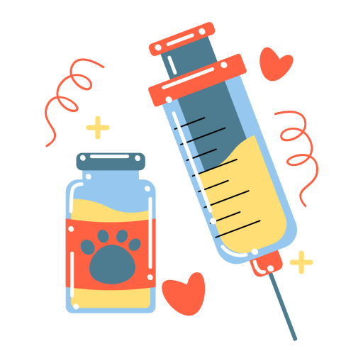

En VetVerde llevamos más de 15 años cuidando la salud y el bienestar de las mascotas de miles de familias en la Ciudad de México. Nuestro equipo está integrado por veterinarios certificados y especialistas altamente capacitados que combinan experiencia, tecnología de vanguardia y un profundo amor por los animales. Nuestra misión es ofrecer atención veterinaria integral de excelencia, accesible para todos, brindando tranquilidad y confianza a cada dueño de mascotas que nos visita.
© 2024 Todos los derechos reservados | VetVerde Clínica Veterinaria | El Cerrito, Valle del Cauca